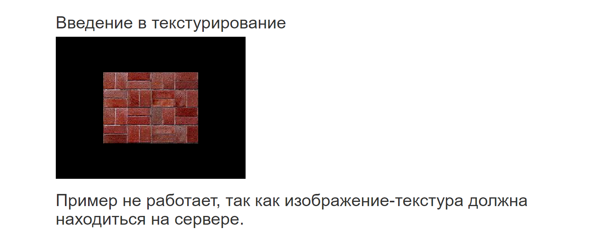

- Главная
- Лабораторная 6
- Введение в текстурирование
Введение в текстурирование
Пример не работает, так как изображение-текстура должна находиться на сервере.
Источник: http://javascript.ru/forum/dom-window/46546-three-js-problema-s-nalozheniem-tekstury.html
Ниже представлен скриншот этой странички, которая была загружена на локальный сервер WampServer
